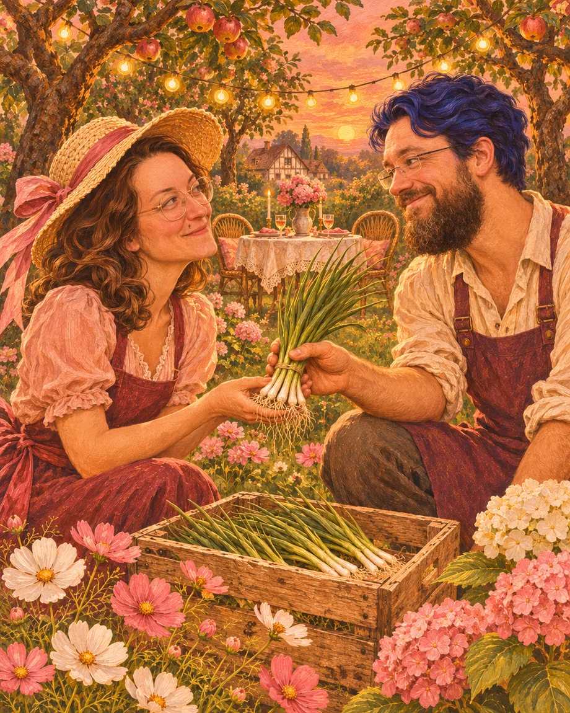
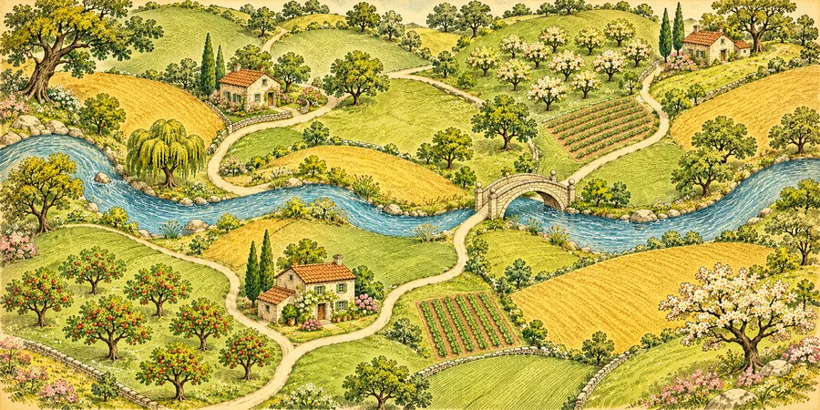

Heute grüßt das Beet.
Liebste Sophia,
ja, dann komme ich zum Pflanzen vorbei.

Gartenwochenende · 5. & 6. Dezember
Lokale Wetterkarte fürs Beet

Pflanzfenster
Für bewurzelte Frühlingszwiebeln: Prüft vor Ort, ob die Erde locker, frostfrei und gut entwässert ist. Die Winterhärte hängt von der Sorte ab.
Modellvorhersage · Open-Meteo · Anbauhinweise
Danach lade ich dich zum Essen ein. Höchstens bis Augsburg.
Nürnberg läuft uns nicht weg. Hauptsache, ich darf ein paar Wimpernschläge Zeit mit dir verbringen und mit dir zusammen sein 💕
Dein Ricardo